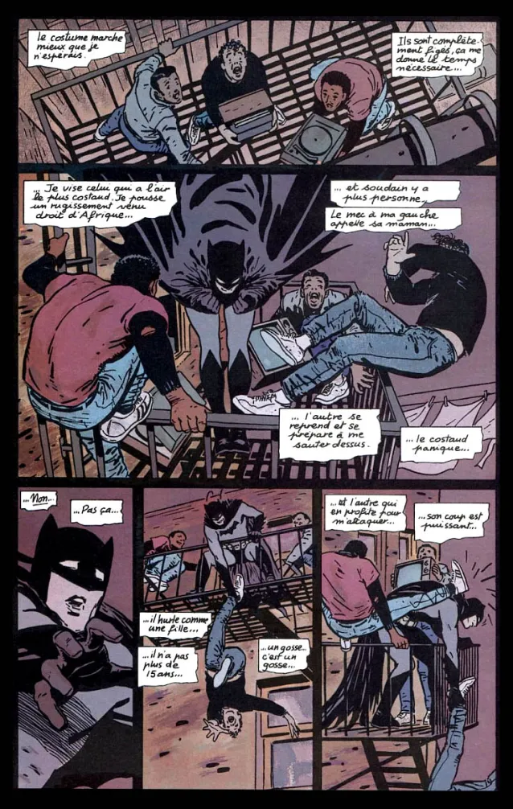
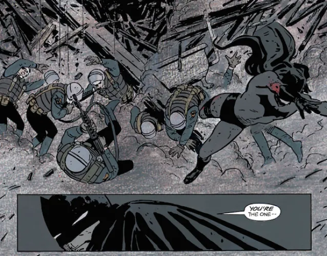
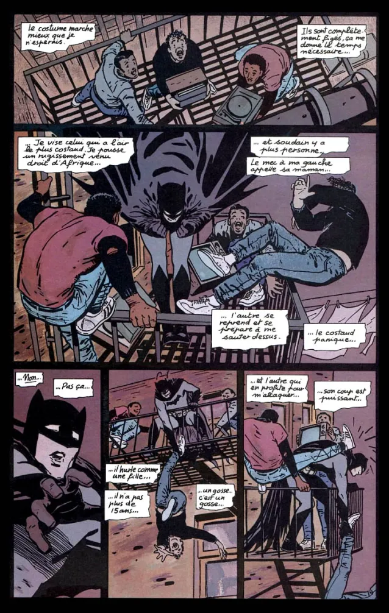
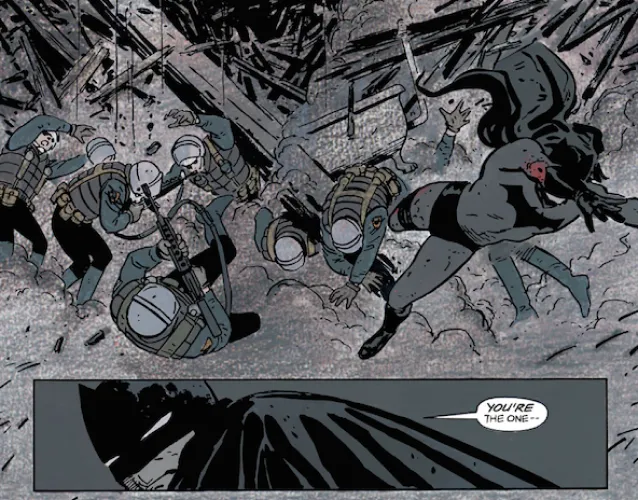
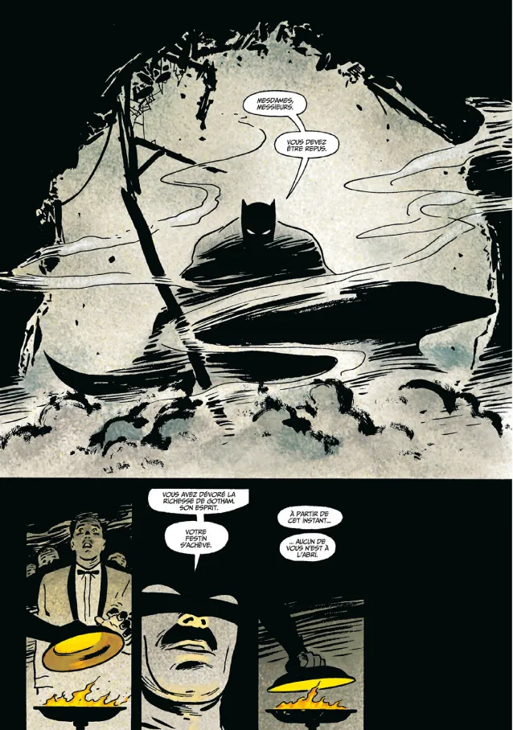

Les deux génies
Batman année un
est le chef d'œuvre incontournable de Frank Miller et David Mazzucchelli, tout les deux
ont fait un travail de titan sur ce comics, qui est pour tous les fans de Batman quelque chose qu'il faut absolument
avoir dans sa collection de comics.
Frank Miller

David Mazzucchelli

Batman année un
retrace les origines de Batman avec Frank Miller qui se charge du récit
et David Mazzucchelli qui vient sublimer le comics avec des dessins et des planches toutes aussi incroyable
les unes que les autres.
Voici certaines planches que David Mazzucchelli a dessiné :
 



Une source d'inspiration même pour les plus grands
Ce comics Batman année un
est considéré par beaucoup comme étant les meilleures origines de Batman,
Christopher Nolan s'en ai d'ailleurs inspiré pour son film : Batman Begins

Et plus récemment Matt Reeves a également trouvé de l'inspiration dans ce comics pour son film :
The Batman
 découvrez en plus sur le film sur cette article
découvrez en plus sur le film sur cette article
Mais ce ne sont pas les seuls beaucoup d'autres on trouver l'inspiration et continu de s'inspirer de ce comics que Frank Miller a écrit pour définir Batman.
Mon avis
Pour ma part j'ai connu Batman par les différents films qu'a réalisé Christopher Nolan, mais je voulais en découvrir
plus sur le Chevalier de Gotham j'ai donc fait des recherches sur ce héros et je suis tombé sur de nombreuses vidéos
de passionné qui parlait et conseillait différent comics par lesquelles commencé, pour découvrir ou redécouvrir
les origines de Batman, le comics qui m'a le plus attiré est Batman année un
.
J'ai été très surpris par l'histoire que nous a offert Frank Miller, car on rentre dans le concret dès le début on voit la noirceur du personnage. On découvre tout au long de la lecture un Batman intriguant et mystérieux, et les dessins de David Mazzucchelli qui sont eux très minimaliste, technique et maitriser que j'ai trouvé incroyable et c'est ce comics qui ma donnée l'envie d'en acheter d'autre et de découvrir d'autres histoires sur Batman.

Je ne peux que le conseiller car je trouve que c'est le comics parfait pour débuter l'histoire de Batman.